7210A61 R R FRONT PILLAR INNER COATING, (ONE) LH OR RH
- Path
- Procedures > 72 PANELS AND FRAMES > 7210 REMOVING-REFITTING > 7210A STRUCTURAL ELEMENTS (FRONT PART) > 7210A61 R R FRONT PILLAR INNER COATING, (ONE) LH OR RH
- Kind
- repair procedure (removal / refitting; the operation number is the code)
- Applies to
- all engines; all production periods
- Interactive page
- https://sloeber94.github.io/elrnDB-fCrm/en/#/194001222
Applies to: all engines; all production periods
 Removing
Removing
 Refitting
RefittingOp. 7210A56 R R BODY SIDE OUTER FRONT STIFFENER, (ONE) LH OR RH
Op. 7210A46 R R (COMPLETE) UPPER FRONT STRUT (ONE) LH OR RH
- Check that the components connected are not distorted by checking the bodyshell alignment measurements using suitable equipment (gauges, templates or jigs).
- Straighten the body as necessary.
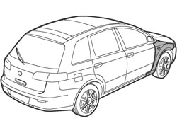
Applies to: all engines; all production periods
1. Use a hot air blower and a wire brush to remove the sealant to be able to gain access the to spot welds.
2. Use a hack sawing machine following the cutting lines shown in the diagram.
3. Remove the offcut.
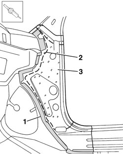
Applies to: all engines; all production periods
1. Use the chamfering machine to remove the spot welds shown in the diagram.
- Use the drill and chamfer the spot welds not accessible with the chamfering machine.
2. Use an oxyacetylene torch and a wire brush to unsolder the brazing at the point shown in the diagram.
- Use the hammer and chisel and remove the spot welds chamfered previously.
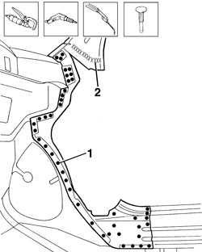
Applies to: all engines; all production periods
1. Undo the fixing bolts (1a) and remove the bonnet hinges (1b) that may have remained in place.
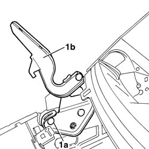
Applies to: all engines; all production periods
- Use the rotary brush to clean the edges of the panel to highlight the spot welds.
1. Use the chamfering machine to remove the spot welds shown in the diagram.
- Use the hammer and chisel and remove the spot welds chamfered previously.
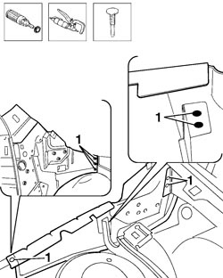
Applies to: all engines; all production periods
1. Lift up the edge of the floor as illustrated in the diagram to make it possible to extract the offcut and later position the replacement cover.
2. Remove the offcut from the vehicle.
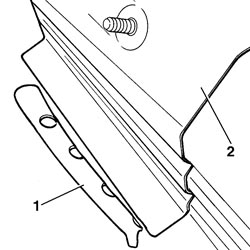
Applies to: all engines; all production periods
- Straighten the edges of the bodyshell using a hammer and dolly block.
- Remove the spot weld residues using a disc grinder.
- Use a rotary brush to clean the areas treated previously.
1. Apply electro-galvanizing paint.
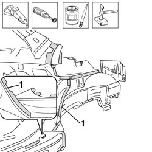
Applies to: all engines; all production periods
- Remove the anti-corrosion treatment from the entire perimeter of the inner and outer parts of the replacement part using the rotary brush.
1. Make equidistant holes using the drill along the lower and rear edge of the replacement part.
2. Apply electro-weldable paint to the edges treated previously.
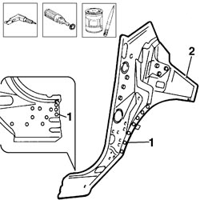
Applies to: all engines; all production periods
Refitting
Removing1. Apply sealant to the edge of the replacement part shown in the diagram.
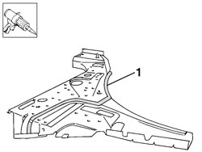
Applies to: all engines; all production periods
- Fit the replacement part and tack it with several spot welds.
1. Provisionally fit the front pillar and reinforcement, the front upper strut, the outer side panel front reinforcement and the front wing.
2. Provsionally fit the front door and seal.
3. Provisionally fit the bonnet.
- Check the alignment and eveness of the surrounding gaps, then remove the door, the seal, the front wing and all the other components fitted provisionally with the exception of the front pillar inner lining.
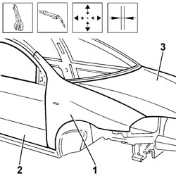
Applies to: all engines; all production periods
- Fold over the edge of the floor lifted previously.
1. Use the MIG welder to fill weld at the points shown in the diagram.
2. Use an oxyacetylene torch and carry out brazing at the point shown in the diagram.
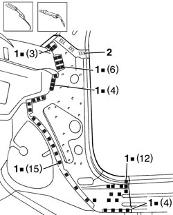
Applies to: all engines; all production periods
1. Use a spot welder in the areas shown in the diagram.
2. Use an oxyacetylene torch and carry out brazing at the points shown in the diagram.
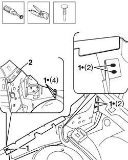
Applies to: all engines; all production periods
- Correct any distortions to the panel using a hammer and dolly block.
- Use a disc grinder to level and remove the welding.
- Use a rotary brush to clean the areas welded previously.
1. Apply anti-oxidant protection to the areas involved in the welding.
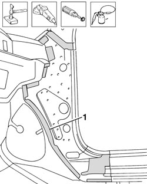
Applies to: all engines; all production periods
- Correct any distortions to the panel using a hammer and dolly block.
- Use a disc grinder to level and remove the welding.
- Use a rotary brush to clean the areas welded previously.
1. Apply anti-oxidant protection to the areas involved in the welding.
- Seal the join lines between the replacement part and the vehicle.
- Renew the underbody protection.
- Proceed with the painting stage.
- Apply wax-based protection to the inside of the underdoor side member.
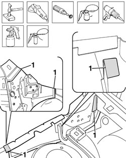
Applies to: all engines; all production periods
Op. 7210A46 R R (COMPLETE) UPPER FRONT STRUT (ONE) LH OR RH
Op. 7210A56 R R BODY SIDE OUTER FRONT STIFFENER, (ONE) LH OR RH